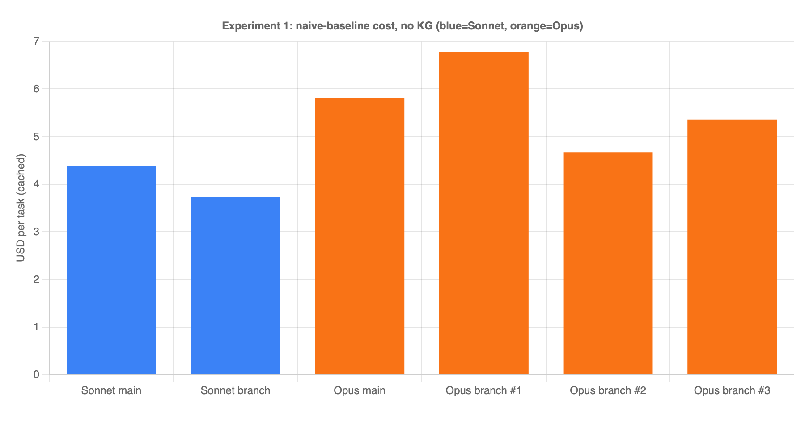
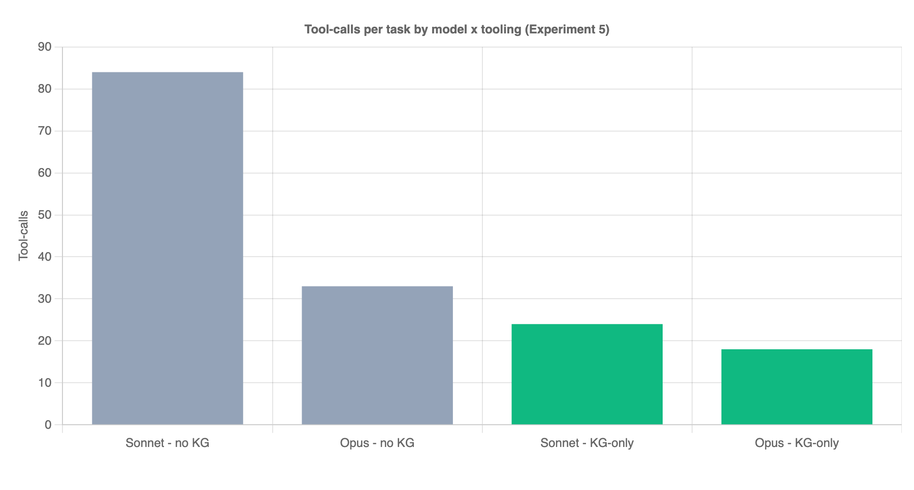

A production TypeScript/React microapp · knowledge-graph-assisted coding agents · results + playbook
We tested whether giving a coding agent a knowledge graph (KG) of the codebase — instead of letting it grep/read files — makes it cheaper and faster. Same task, same repo, every kept result correct + green.
| Agent | tool-calls | tokens | cost (cached) | cost (naive) |
|---|---|---|---|---|
| Sonnet · no KG | 84 | 8.05M | $4.39 | $24.86 |
| Opus · no KG | 33 | 1.56M | $5.81 | $24.49 |
| Sonnet · KG-only | 24 | 0.75M | $0.86 | $2.51 |
| Opus · KG-only | 18 | 0.49M | $3.43 | $8.35 |
Headline: the KG turned Sonnet from the most expensive, worst-behaving option into the cost-optimal one — ~5× cheaper than non-KG Sonnet and ~4× cheaper than KG Opus, while matching them on correctness.
In the Item Sales widget, change the primary graph series color to
#FF6B6Band set the line width to3px. This affects the default/daily chart, the real-time ("Today") chart, and the compare-mode chart. Do not touch the dashed comparison series. Fix any tests the change breaks.
Why this task: it's a realistic "small change, shared code, spooky test fallout" job. The color
lives in a shared source-of-truth (METRIC_SERIES_COLORS / getMetricColors) consumed by three
chart paths, and the change breaks a parameterized test.each invariant — exactly the kind of
thing that makes agents flail.
locate, plan, trace, impact, read, apply,
verify). Edits + test-runs happen through the same tools.We also tried a KG-preferred (suggestive) agent: KG tools available, but grep/read/shell left in as a fallback. It sprawled and we killed it. The session tells the story:
46 tool calls, only 4 were KG — the rest were
grep ×26,read_file ×14,list_files ×2.
Given the choice, the model bolts straight back to its grep/read comfort zone and ignores the graph, reverting to the ~84-call non-KG baseline. The starvation is the mechanism, not just a measurement trick. Ship KG-only agents.
The first KG-only Sonnet run was fine but not great. We instrumented every run, found the bottleneck, shipped a tooling fix, re-ran. The journey (Sonnet, KG-only):
| iteration | turns | tokens | what changed |
|---|---|---|---|
| verifyhydrate-1 | 29 | 1.32M | baseline: verify hydrates the failing assertion into the verdict |
| locateedge-1 | 45 | 3.22M | regression — enriched locate to show caller/referencer names; a test.each tail meltdown |
| testblock-1 | 23 | 1.84M | verify hydrates the enclosing test block (test.each structure) + test_one escape hatch |
| discovery-1 | 30 | 0.86M | capped locate payload (5 candidates), added a confidence signal + forward trace |
| locbudget-1 | 24 | 0.75M | best — server-side locate budget + looser concept-strong signal |
| discbudget-1 | 28 | 0.98M | regression — shared discovery budget; reverted (see lesson below) |
locate returned ~15 candidates @ ~9KB every call, re-transmitted
each turn. Capping it to the top few + hydrating only the best candidate cut a large,
turn-multiplied token tax.test.each(METRICS)(...) with its invariant comment). This collapsed a
14-call test-fix meltdown into a tight apply → verify — the single biggest turn win.locate now prints >> STRONG MATCH when it's confident. Opus
acts on it immediately; Sonnet is more stubborn (see lessons).locate, then read, then a
shared locate+trace+impact budget. Each time, the model re-routed around the cap
(locate → impact → trace → read) and hit the same total. Discovery is a ~20-call
behavioral floor — the model discharges a fixed "orientation quota" regardless. We reverted
the shared discovery budget.Every run used Anthropic prompt caching, and the API's own usage counters prove it — the vast majority of "input" tokens are cheap cache-reads, not full-price fresh tokens:
| run | total input | cache read | cache write | truly fresh |
|---|---|---|---|---|
| Sonnet + KG | 724,437 | 635,118 (88%) | 89,281 | 38 |
| Opus + KG | 467,068 | 386,883 (83%) | 80,159 | 26 |
| Sonnet · no KG | 7,994,269 | 7,670,217 (96%) | 323,882 | 170 |
cost cached = the real bill (cache-reads billed at ~10% of input price). Use this.cost naive = hypothetical "if caching were off" (all input at full price). Same run, worst case.Key economic insight: because ~90% of input is cheap cache-reads, the dollar drivers are output tokens + cache-writes, both of which scale with number of turns, not payload size. So cost is set by turn count. That's why the whole optimization effort targeted turns.
(Note: at the non-KG baseline, Opus and Sonnet cost about the same — Opus's token-efficiency cancels its 5× price. KG breaks the tie: once tokens shrink, the per-token price gap dominates and the cheaper model, Sonnet, wins decisively.)
STRONG MATCH signal and edits immediately.STRONG
MATCH and over-explored. But the KG closes that gap enough that its 5× lower price wins on cost.totalGMV) triggered a
parameterized-invariant test that the sloppy all-metrics edit sidestepped. Good scoping isn't
always the easy path — the tooling has to help with the test fallout, which is what verify
hydration does.kg-sonnet for scoped changes; reach for kg-opus when you want the fewest
round-trips and don't mind paying. Pin the model explicitly — see §8; kg-sonnet ships on
claude-5-sonnet (a silent drift to claude-4-6-sonnet measurably regressed correctness & cost).codegraph-ext/), driven by two
KG-only agents (a cost-optimal "sonnet" cell and a fewest-turns "opus" cell). See the
README to point them at any repo.trace from a widget can dead-end where a value flows
through a component prop; the workaround is to trace from the shared component's config symbol.Holding the KG scaffold completely fixed (same KG-only agent ab-sonnet-kgonly-tight, same
clone, same task, system prompt SHA-256-identical including the sandbox lock), we varied only
the model and ran each n=3. Correctness was adjudicated by the harness (independent diff + scope
count + fresh un-memoized test run) — never the agent's self-report.
| Model | Correct | Mean turns | Mean tokens | Mean cost (cached) |
|---|---|---|---|---|
claude-5-sonnet |
3/3 (100%) | 22 | 770K | $0.84 |
claude-4-6-sonnet |
2/3 (67%) | 29 (correct runs) | 971K | $1.06 (correct runs) |
Sonnet 5 wins on every axis — 100% vs 67% correct, ~32% fewer turns, ~26% cheaper per success. The KG index/augmentation/prompt were provably unchanged (SHA match); the model swap alone explained the regression that kicked off this whole investigation (a shipped agent's model pin had silently drifted to 4.6).
Both 4.6 failures would pass a naive “did it say it passed?” gate:
- Green-but-wrong (scope over-reach): one 4.6 run recolored all 4 metrics yet tests were
149/149 PASS — no test asserts the other metrics keep their colors (coverage gap). verify
answers “did I break covered behavior?”, not “did I change exactly what was asked?”
- Fabricated FINAL ANSWER: an earlier 4.6 attempt listed color edits to files its tool trace
never touched and claimed a verify PASS it never called; the diff + real test run contradicted it.
Neither mode appeared in any Sonnet 5 run. Consequence: the success signal must come from the
harness, not the subject — and pair verify with a scope check for value/scoped edits.
Every section above fixed the task and varied the tooling/model. This one fixes the model
(claude-5-sonnet on both arms — a clean tooling-only contrast) and varies the task shape
along two axes to ask which kinds of change KG actually helps with. Three tiers, KG-only
(ab-sonnet-kgonly-tight) vs naive (grep/read/shell, ab-main-sonnet), n=5 per cell, head-less,
15-min hard kill (a kill = a "failed to converge" data point), oracle-adjudicated.
| Tier | Change | Blast radius | Scope ambiguity |
|---|---|---|---|
| T1 trivial | one shared fill-opacity constant 0.4→0.55 | 1 file | none |
| T2 ambiguous | recolor the "primary graph series" (GMV) + stroke width | ~2 files | high (which metric? shared stroke vs scoped color? legacy palette?) |
| T3 wide-mechanical | tooltip bg #002242→#013A63 everywhere except redesign branch |
4 files | low (uniform find-and-replace) |
Correctness (n=5, oracle-adjudicated):
| Tier | KG | Naive |
|---|---|---|
| T1 trivial | 3/3 | 2/2 |
| T2 ambiguous | 4/5 (1 green-but-wrong) | 0/5 (5/5 timed out) |
| T3 wide-mechanical | 5/5 | 5/5 |
Time to correct change (s): T1 KG med 48 vs naive 96 · T2 KG med 384 vs naive ≥900 (censored, killed) · T3 KG med 113 vs naive 267.
In the paper's own currency (turns / tokens / $), recovered from recorded sessions — turns drive cost (§5). Killed runs are never flushed to disk, so naive T2 has no turn data (converged tiers only):
| Tier | Arm | Turns (mean / raw) | Tokens (mean) | $ (mean) |
|---|---|---|---|---|
| T1 | KG | 4.7 (4,5,5) | 67K | $0.076 |
| T1 | naive | 16.5 (13,20) | 348K | $0.249 |
| T2 | KG | 18.4 (13,17,19,21,22) | 915K | $0.922 |
| T2 | naive | — all 5 killed, no flush — | ||
| T3 | KG | 7.0 (7,7,7,7,7) | 171K | $0.231 |
| T3 | naive | 40.0 (18,37,43,44,58) | 1.42M | $0.796 |
Significance:
- T2 correctness — Fisher's exact 2-sided: p = 0.0476 (significant). [[4,1],[0,5]]. Landed on
the razor's edge: with KG at 4/5, naive had to be a clean 0/5 to clear α=0.05 — and it was.
- T3 efficiency — Mann-Whitney (exact, 2-sided): turns U=0 p = 0.0079; time U=1 p = 0.0159. Turns
is the cleaner signal and the cost driver: KG spent exactly 7 turns on all 5 runs (zero
variance) vs naive 18–58 — perfect separation. In $: $0.23 vs $0.80 = 3.4×, at identical 5/5
correctness. (Wall-clock 2.4× is noisier — one naive run hit 116s, overlapping KG's range.)
- T1 — genuine null, uncertifiable at n=3/2 (min achievable p = 0.20 regardless of separation).
The mechanism (revises the blast-radius intuition): KG's payoff tracks scope ambiguity, not fan-out. T3 has the widest fan-out yet naive nails it 5/5 — just 3.4× costlier ($0.80 vs $0.23) and ~5.7× the turns (40 vs 7); notably KG spent exactly 7 turns every run (graph makes discovery deterministic) while naive ranged 18–58 (a dice roll). T2 has narrow fan-out but real interpretive choice, and it's the only tier where naive fails outright — by never converging (unstructured grep/read exploration; one run hit the framework's context-compaction spiral before the kill). On mechanical work KG buys cost+consistency; on ambiguous work it's the difference between finishing and timing out; on trivial work it's neither.
Caveats: the T2 win is non-convergence, not wrong-answer (the 15-min budget is part of the
claim); KG still threw 1/5 green-but-wrong (reduces ≠ eliminates the ambiguity failure mode); an early
T3 run false-failed on missing compiled Lingui locales (environment gap) — recompiled, discarded,
re-ran clean, excluded from figures; still one repo/one model. The harness and raw results.jsonl
are kept privately; p-values computed by exact enumeration.
Extended-budget follow-up (is naive slow, or stuck?): the most-attackable line above is the 15-min
wall. We re-ran naive T2 on a clean clone at 3× the budget — a 45-min hard kill, same task/oracle/
model. Result: 0/2 converged. r6 ran the full 45 min (2 context-compaction spirals, summarizing 42
then 69 older messages) with 0 applied change; r8 ran the full 45 min, reached the correct shared fn
createSingleSeries (~min 38) and fired one edit that silently no-op'd (git diff empty). (A third
run was excluded — cut short by an org-wide 429 token-quota event, not the kill.) Verdict: naive is
stuck, not slow — extending the headline from "0/5 in 15 min" to "0/2 with 3× the runway." The failure
is structural discovery (rediscover→lose→rediscover across compaction boundaries), not throughput; every
KG T2 run converged in a median 384s, ~1/7 of the budget naive exhausted without a diff. A side-by-side
replay of one KG vs one naive run (built from the real transcripts) was recorded as a side-by-side
screencast (kept with the private harness).
Generated from recorded agent sessions. The experiment harness and raw session logs are kept privately; the numbers above are reproduced verbatim from those recordings.


